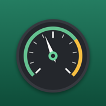

ServicedTo report a problem or ask a question, email apps.saleh@pm.me.
A service says “Not logged yet”.
Serviced counts from the last time a service was done, and nothing of that kind has been logged. Tap it, tap Mark as done, and set the date (and odometer) of the last time; from then on it counts by itself.
Why is there no consumption figure yet?
Consumption needs two full tanks: it is worked out from the distance between one full fill and the next. Partial fills are folded into the next full tank. It appears after your second full fill-up.
I didn’t get a reminder notification.
Notifications need to be on for Serviced: Settings → Notifications → Serviced. Date-based reminders notify two weeks before and on the day, at 9 in the morning. Distance-based reminders can’t be scheduled ahead, so they show on the Services card and send a nudge after a fill-up or odometer reading that brings them close.
How do I switch to miles, or to kilometres?
Settings (the gear) → Units. It applies to every car, and everything already logged is converted.
How do I change a car’s currency?
Settings → the car → Currency. Entries keep their amounts; the symbol changes.
Can I edit or delete an entry?
On the History tab, tap an entry to edit it, or swipe left to delete it. Odometer-only readings can be deleted but not edited.
How do I get my log out?
History tab → the share button → Export CSV. The file opens in Numbers, Excel or Google Sheets, with every fill-up, service and reading.
Does deleting a service change its reminder?
Yes: the reminder counts from the latest entry of that kind, so after a deletion it counts from the one before it, or reads “Not logged yet” if none is left.
How do I start again from scratch?
Settings (the gear) → Wipe data. It removes every car and its log and puts the settings back to first launch. Export any log you want to keep first; it cannot be undone.
Do I need an account or internet?
No. Serviced works offline, with no sign-in, and never connects to anything.
Can I move my garage to a new phone?
It moves with a normal iPhone backup and restore, or a phone-to-phone transfer. The app has no syncing of its own.
Home · Privacy policy · © 2026 Abdullah Saleh